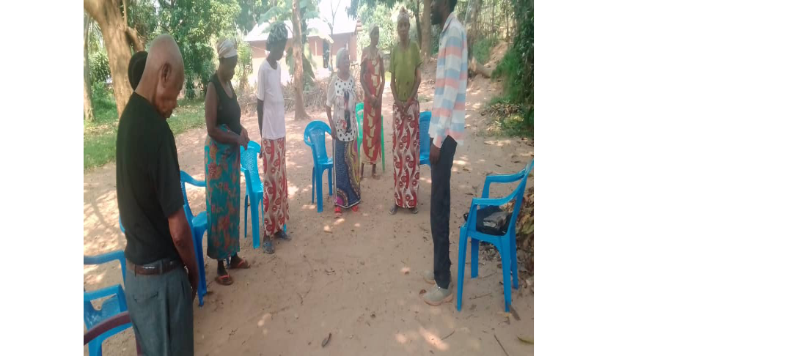

Qui Nous Sommes
Un Mandat Prophétique pour les Nations
International Rescue Ministry est une communauté prophétique qui élève un standard de délivrance, de restauration et de percée fondationnelle à travers les frontières.
En établissant des réseaux opérationnels au-delà des divisions continentales, nous offrons des environnements spirituels sécurisés pour l'intercession directe, l'édification communautaire et l'accompagnement pastoral.
"Dieu façonne le monde par la prière. Plus il y a de prière dans le monde, meilleur sera le monde, et plus puissantes seront les forces contre le mal."
— Mère TeresaPourquoi Devons-Nous Prier ?
Dieu sait déjà tout de toute façon. Il est tout-puissant, souverain et contrôle toutes choses. Pourquoi donc devons-nous constamment établir notre communion et notre relation avec Lui par l'adoration, les actions de grâces et une intercession régulière ?
Communier comme Ses Enfants
Nous prions parce que nous sommes les enfants de Dieu, et Il aime recevoir de nos nouvelles et nous entendre en tant que Père céleste.
Approfondir Notre Confiance
La prière ancre l'âme, chasse l'inquiétude et transforme l'anxiété en une paix profonde, remplie de gratitude, qui garde le cœur en sécurité.
Dépendre Entièrement de Dieu
Elle brise toute autosuffisance humaine et nous amène à nous réaligner avec Celui qui commande aux étoiles et a façonné toute vie.
S'Exprimer en Toute Liberté
Elle nous offre un espace sûr pour épancher notre cœur et exposer notre vulnérabilité devant Dieu, notre ultime refuge et forteresse.
Toucher le Cœur de Dieu
Une intercession authentique aligne nos motivations, purifie nos cœurs de la colère ou de la convoitise, et active les mouvements célestes.
Collaborer à Son Œuvre Mondiale
C'est un mécanisme prophétique extraordinaire qui nous permet de nous impliquer activement dans ce que Dieu accomplit déjà sur la Terre.
Nos Implantations & Extensions

Extension Kinshasa
Point de Rassemblement : Centre d'Impact et de Communion Local
Focus Opérationnel : Diffusions physiques hebdomadaires et cellules de prière de proximité.
Fuseau Horaire : Central Africa Time (CAT)
Contacter le Dirigeant Local
Hub Régional de Kikwit
Point de Rassemblement : Antenne d'Évangélisation et d'Aide Communautaire
Focus Opérationnel : Sessions de délivrance prophétique, entretiens de conseil et soutien pastoral de base.
Fuseau Horaire : Central Africa Time (CAT)
Rejoindre la Cellule de Kikwit
Le Visionnaire du Ministère
[Insérez ici le texte biographique en français. Cet espace éditorial est conçu pour présenter le parcours, l'appel prophétique, la vision globale et la direction spirituelle du leader de ce ministère.]
Lire la Biographie Complète